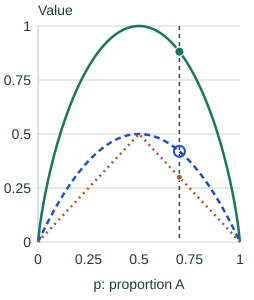

Impurity & Information Gain
A classification leaf must predict from the labels that reached it. A node containing only class A is easy to summarize; one containing equal numbers of A and B is more uncertain. Impurity puts a number on that mixture so we can compare splits.
Start with a node containing two classes
Suppose 7 of 10 rows are A and 3 are B. Let $p$ be A’s proportion, 0.7; B’s proportion is $1-p$, or 0.3. Three common summaries are:
| Measure | Calculation here | What it measures |
|---|---|---|
| Gini impurity | 1 − 0.7² − 0.3² = 0.42 | How often two independent labels drawn from this mixture disagree |
| Entropy | −0.7 log₂(0.7) − 0.3 log₂(0.3) ≈ 0.881 bits | Average uncertainty about the label |
| Majority-class error | 1 − 0.7 = 0.30 | How often always predicting A would be wrong |
For more than two classes, let $p_k$ be the fraction belonging to class $k$. The fractions sum to 1. Gini and entropy are:
Take the entropy contribution of an absent class as zero. All three measures are zero for a pure node. Entropy’s logarithm gives a coding interpretation, explained in the optional information-theory chapter.
Why Gini differs from prediction error
With the 70/30 mixture, the two independent draws disagree in two ways: A then B or B then A. Their probabilities add to 0.7 × 0.3 + 0.3 × 0.7 = 0.42. Always predicting the majority class instead makes an error only on the B rows, giving 0.30.
▶ Entropy, Gini & Misclassification vs p
The horizontal axis is p, the proportion of class A; class B has proportion 1 − p. All curves vanish at pure nodes and peak at a balanced mixture. Move the slider or step through increments of 0.05.

p = 0.70: class A 70%, class B 30%.
- Entropy (bits)
- 0.881
- Gini
- 0.420
- Majority error
- 0.300
For this plot, $p$ is the proportion of the first class. Entropy reaches 1 bit at a balanced node, while Gini reaches 0.5. Their vertical scales differ; compare the shape within each measure rather than reading a larger number as a better criterion.
The symmetry is useful: a 70/30 mixture has exactly the same impurity as a 30/70 mixture. Swapping class names changes which label a majority-vote leaf predicts, but not how mixed the labels are. At p = 0.5 the leaf’s majority prediction needs a tie rule, while all three impurity values remain well-defined.
Weight each child by how many rows it contains
A split should reduce the impurity experienced by a randomly selected training row. A child containing nine rows should therefore count nine times as much as a child containing one.
Let $I$ be the chosen impurity, $N$ the parent’s row count, and $N_L,N_R$ the left and right counts. The reduction is:
For a parent with 4 A and 4 B, entropy is 1 bit. Split it into children with (3 A, 1 B) and (1 A, 3 B). Each child’s entropy is about 0.811, and each contains half the rows. The gain is 1 − 0.5 × 0.811 − 0.5 × 0.811 ≈ 0.189 bits.
The threshold sweep below uses a different ordered sample: A, A, B, A, B, B, B, B. Its parent has 3 A and 5 B, so its starting entropy is about 0.954 bits.
▶ Finding the Best Split by Information Gain
The feature values are x = 1 through 8, in order. Each chip shows x and its class. A row goes left when x < threshold. The parent has 3 A and 5 B: entropy 0.954 bits.
- x=1A
- x=2A
- x=3B
- x=4A
- x=5B
- x=6B
- x=7B
- x=8B
Best candidate: threshold 4.5. Four rows go left and four go right.
Blue bars show each child’s entropy. Green bars show its contribution after multiplying by the child’s fraction of rows. Both use the same 0–1 bit scale.
Left: x < 4.5
- x=1A
- x=2A
- x=3B
- x=4A
3 A + 1 B · 4 of 8 rows
Entropy H = 0.811 bits
Contribution: (4/8) × 0.811 ≈ 0.406 bits
Right: x ≥ 4.5
- x=5B
- x=6B
- x=7B
- x=8B
0 A + 4 B · 4 of 8 rows
Entropy H = 0.000 bits
Contribution: (4/8) × 0.000 ≈ 0.000 bits
Weighted child entropy ≈ 0.406 bits. Gain = parent entropy − weighted child entropy ≈ 0.549 bits.
Best of all seven candidates: threshold 4.5, gain 0.549 bits.
The animation computes this weighted reduction for candidate thresholds. With entropy, the reduction is called information gain; with Gini, it is Gini impurity decrease. The next note explains how to enumerate candidate thresholds efficiently.
Work through the selected threshold, 4.5
The rule sends x = 1, 2, 3, 4 left and x = 5, 6, 7, 8 right. The left child has 3 A and 1 B, so its entropy is 0.811278 bits. The right child contains only B, so its entropy is zero. Each child contains half the parent’s rows:
Subtract from the parent’s 0.954434 bits to get 0.548795 bits of information gain. This is the best of the seven candidate gaps for this sample. The four-row pure child helps, but it is still a training-data calculation, not a guarantee of future accuracy.
Why an unweighted child average can choose the wrong split
At threshold 2.5, the left child has just two A rows and entropy zero. The right child contains six rows—1 A and 5 B—with entropy 0.650022 bits. It must count three times as much as the left child:
| Threshold | Correct row-weighted gain | Incorrect equal-child gain |
|---|---|---|
| 2.5 | 0.467 bits | 0.629 bits |
| 4.5 | 0.549 bits | 0.549 bits |
Giving each child half the influence would overvalue the tiny pure child and falsely prefer 2.5. Weighting by rows correctly prefers 4.5. With sample weights, use each child’s fraction of the total sample weight and compute its class proportions from weighted class counts.
Check all seven candidates, and compare the Gini calculation
| Threshold | Left / right rows | Weighted child entropy | Information gain |
|---|---|---|---|
| 1.5 | 1 / 7 | 0.755 | 0.199 |
| 2.5 | 2 / 6 | 0.488 | 0.467 |
| 3.5 | 3 / 5 | 0.796 | 0.159 |
| 4.5 | 4 / 4 | 0.406 | 0.549 |
| 5.5 | 5 / 3 | 0.607 | 0.348 |
| 6.5 | 6 / 2 | 0.750 | 0.204 |
| 7.5 | 7 / 1 | 0.862 | 0.092 |
At threshold 4.5, parent Gini is $1-(3/8)^2-(5/8)^2=0.46875$. Left Gini is $1-(3/4)^2-(1/4)^2=0.375$; right Gini is zero. The row-weighted child value is 0.1875, so the Gini decrease is 0.28125. It also favors 4.5 on this sample. The gain values are measured on different scales; 0.549 bits versus 0.28125 does not rank the quality of the two criteria.
Choose a criterion without treating it as an accuracy guarantee
Gini and entropy both reward concentrated child labels and often make similar choices, but they can disagree. Gini avoids logarithms; that does not guarantee a faster end-to-end training run or a better model. Compare validation performance under otherwise comparable settings.
Majority-class error can miss useful changes. For example, splitting a 60/40 mixture into equally sized 70/30 and 50/50 children leaves average majority error at 0.40, while Gini falls from 0.48 to 0.46. The proportions changed even though majority error did not improve.
Use entropy when its interpretation helps
Entropy expresses label uncertainty in bits, so information gain describes how much a split reduces that uncertainty. It is useful for connecting tree splits to log loss and for reading entropy-based tree algorithms. It does not make the resulting class probabilities automatically calibrated.
A search that considers many possible splits has more chances to find an apparently good one by luck. Leaf-size limits and validation remain necessary whichever criterion you use. The scanned notes provide a compact companion.
Sources and next steps
- Decision-tree classification criteria — Gini, entropy, and their relationship to leaf probabilities.
- The weighted split objective — How child impurities are combined during greedy search.